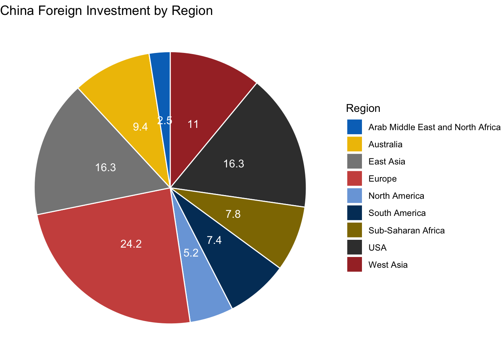
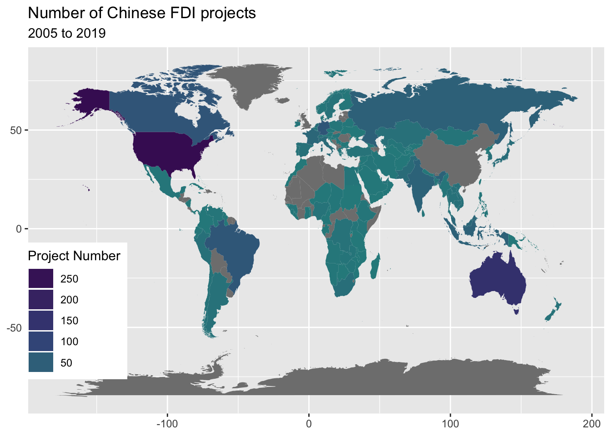
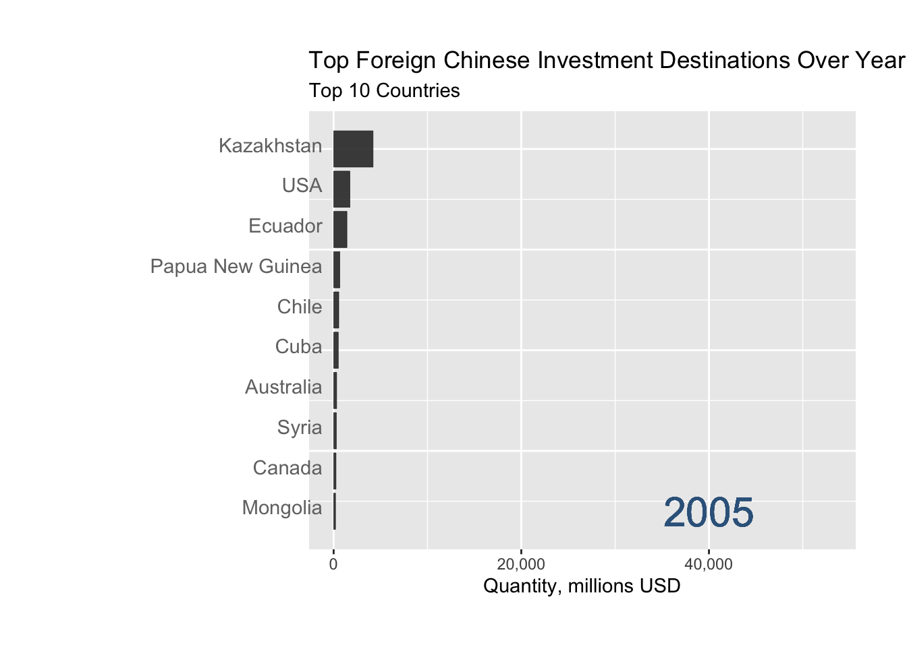

Chapter 3 Size of Investment
3.1 China Foreign Investment by Region

The graph compares China’s investment to foreign countries by different target regions in terms of project numbers, between 2005 and 2019. We used the percentage to present the number of projects. The top three target regions or countries are Europe, East Asia, and USA. However, if we combine the data from North America with USA, then North America should be the second most popular target of Chinese investment. MENA region has the fewest number of projects.
3.2 Investment over World
We further plot the countries on the world map, and have a detailed insight on the world distribution:

During 2005 to 2019, we can find that Chinese outward Foreign Direct Investment mainly focuses in USA and Australia,following by Canada, Russia, Brazil, Germany, and India.
3.3 Network Vesion: Investment over World

This map shows the network between China and invested countries. The larger the circle is the more total amount from 2005-2014 invested to that counry. We can easily tell that China invest more on big countries like USA, Russia, Canada and Austrailia. Obviously China invested more on developed countries than those less economically developed areas. Noticed that the density of south Africa is abnormaly high compared to its economic.Also, South America and North Africa are two areas that less covered by the invest map of China.
3.4 China Investment by Year
Red-Investment, Steelblue-Construction.
The figure compares numbers of total Chinese foreign investments and construction projects from 2005 to 2019. We find that the number of Chinese foreign investment has increased year-on-year before 2016 except for 2013. For construction projects, the number of projects has increased year-on-year before 2016 except for 2012.
The number of investment and construction projects have both peaked in 2016, which are 235 and 206 respectively. It has later experienced a continuous drop in 2017 and 2018. The big decrease in 2019 may due to the fact that the data in 2019 was not fully collected.
3.5 Top 10 Foreign Chinese Investment Destinations Over Years
 We have found that top destinations of Chinese foreign investment change quite regularly. However, countries like the United States, Russia, Germany, Australia, Canada, Brazil, and Kazakhstan appeared more often than other countries. This shows that Chinese foreign investment projects can be categorized into two groups, with one being more technologically advanced investment, and the other being raw materials investment.